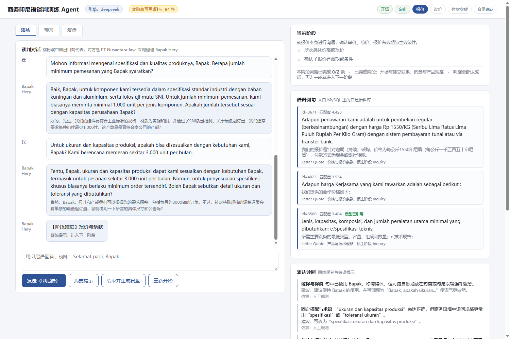
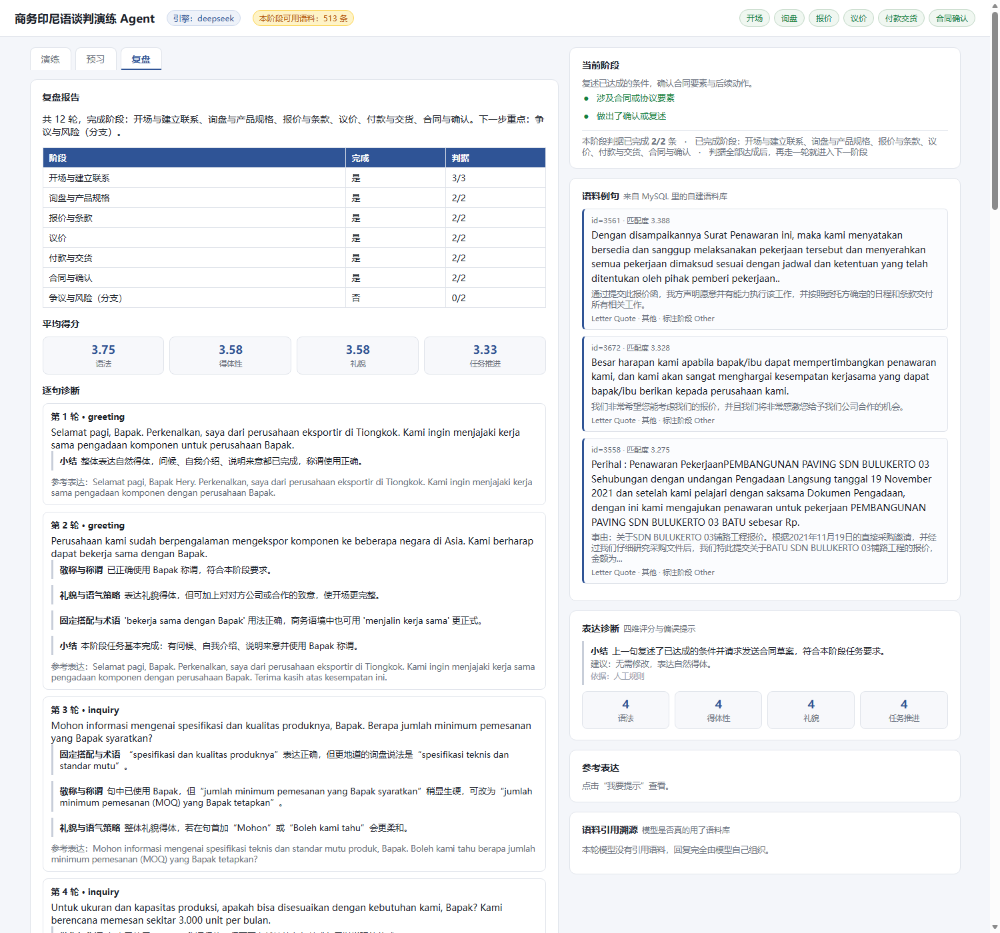

一、12 轮真实对话回放可点击 · 无需安装
下面是真实运行录下来的 12 轮对话（用 DeepSeek 作为角色扮演与诊断模型，语料检索直连自建语料库）。 点「播放」或「下一步」，可以看到右侧教练面板如何随每一轮更新：本阶段任务、语料例句、表达诊断、四维评分、语料引用溯源。
说明：为了在网页上回放，对话内容是预先录制好的真实结果；实际产品运行时，每一轮都是实时调用模型生成的。
二、问题定义
目标用户
- 主要用户：国内高校印尼语专业高年级学生——已掌握基础语法，但商务表达多来自教材，缺少实战机会。
- 次要用户：跨境电商、外贸岗位的新人——能用印尼语沟通，但不确定语气是否得体。
- 使用与采购决策者：商务印尼语课程教师——想布置口语实训，却无法逐一陪练与批改。
现有替代方案及其不足
| 替代方案 | 用户现在怎么做 | 不足 |
|---|---|---|
| 通用大模型 | 直接和 ChatGPT、DeepSeek 用印尼语对话 | 语言流畅，但表达偏教科书味，无法确认是否贴近印尼企业真实用法；反馈停留在通用语法层面，没有可核对的依据 |
| 教材与教辅 | 背课文、做书面练习 | 语料陈旧，无法互动，没有即时反馈 |
| 教师一对一演练 | 课上与老师角色扮演 | 效果最好，但机会稀缺、无法随时练习、缺少过程记录用于复盘 |
| 语料库检索平台 | 查单词、看例句 | 能得到真实语料，但学习者不知道自己该说什么，结果不成体系 |
三、关键决策：一次数据核对改掉了产品设计
最初的方案（也是通用做法）是：用 negotiation_stage 标签做检索过滤，让 Agent 按"询盘 → 议价 → 付款"推进。
动手前我先统计了 4068 条语料的标签分布，结果是这样：
| negotiation_stage | 条目数 | 占比 |
|---|---|---|
| Other | 3464 | 85.2% |
| Inquiry | 297 | 7.3% |
| Contract | 208 | 5.1% |
| Dispute | 53 | 1.3% |
| Bargaining | 46 | 1.1% |
进一步抽查发现：标成 Bargaining 的句子，实际是年报里的风险管理段落，例如"多国政府更迭带来经济与贸易政策的新预期"——和议价毫无关系。这批标签是按主题猜的，不是真实谈判阶段。
所以我把检索骨架从"标签"换成"领域 + 主题"：用 domain 与 sub_domain 构造出六个阶段各自的语料池，标签降级为界面上的参考标注。改完之后，议价阶段能稳定推出"所有报价均可根据贵公司需求协商"这类真正可用的句子。
同步的发现：真正与商务交易相关的语料集中在信函报价单领域（624 条，占 15.3%）；重复句 209 条（5.1%）在检索时降权；表格碎片类短条目单独处理。这些核对结果都写进了产品需求文档的附录。
四、产品设计
用谈判阶段做产品骨架
每个阶段有明确的任务与可判定的完成条件，判据由规则计算，不由模型"感觉"——这样进度可复现、可复盘。
| 阶段 | 学习者要完成的任务 | 完成判据 |
|---|---|---|
| 开场与建立联系 | 问候、自我介绍、说明来意 | 使用称谓、包含问候、说明来意 |
| 询盘与产品规格 | 询问规格、质量与采购数量 | 提到规格或质量、确认数量或起订量 |
| 报价与条款 | 确认单价、总价、报价有效期 | 涉及具体价格、确认有效期或条件 |
| 议价 | 协商单价与折扣，给出理由 | 提出价格诉求、给出理由或条件 |
| 付款与交货 | 确定付款方式、账期与交期 | 明确付款方式、明确交期或运输方式 |
| 合同与确认 | 复述共识、确认合同要素 | 涉及合同要素、做出确认或复述 |
三种使用模式，而不是"每轮都纠错"
最初的想法是每轮同时输出"角色回应 + 语法诊断"。但每轮打断会破坏谈判状态，产出过程被频繁纠错也不利于流畅度。所以拆成三种模式：
- 预习：开口前给出本阶段任务与 6–8 条真实语料作为支架。
- 演练：纯对话，不打断；参考表达默认折叠，先提交再看。
- 复盘：结束后统一给逐句诊断、语料对照与阶段完成度，可导出 Markdown。
把诊断范围收窄
大模型对印尼语的判断并不总是可靠，而一次错误的诊断比没有诊断更损害信任。所以诊断只覆盖五类有文献支撑、且语料能提供佐证的偏误：词缀与词形、被动结构、敬称与称谓、礼貌与语气策略、固定搭配与术语。每条诊断都标注依据是语料还是规则。
让"用了语料"变成可验证的事
提示词要求模型在 used_ids 里写出它参考过的语料编号，服务端再与本轮真实检索结果逐条比对：对得上才算有效引用，对不上标记为编造并排除出统计。
这样"语料是数据壁垒"就从一句主张变成了一个可以算出来的数字——引用有效率。
五、评测设计
评测分三层：检索层与生成层可以用人工标准答案算出准确率，效果层只能给出初步证据——报告里会明确区分这两类证据强度。
- 四维量表：语法与词形准确性、商务得体性、礼貌与语用策略、任务推进有效性，各分四级并给出等级锚点。
- 黄金评测集：120–150 条学习者产出句，按谈判阶段分层，覆盖五类偏误，并保留"没有偏误"的句子专门检测误报。
- 诊断判定：命中、部分命中、漏报、误报四类；误报率是硬门槛（≤10%）——学习者对错误诊断的容忍度最低。
- 对照实验：取 20 条固定输入，分别跑"纯大模型"与"语料增强"两个条件，由两名印尼语母语者与一名中国籍印尼语教师盲评，配对检验比较四维得分。
- 核心假设 H1：语料增强在商务得体性与地道度上显著优于纯大模型（均值差 ≥0.5 且 p<0.05）。
六、跑出来的结果真实截图与数字


本轮演示的实测数据
| 指标 | 实测值 |
|---|---|
| 走完的谈判阶段 | 6 / 6（开场与建立联系、询盘与产品规格、报价与条款、议价、付款与交货、合同与确认） |
| 对话轮次 | 12 轮，全部由模型实时生成，无回退 |
| 平均得分（1–4 分） | 语法 3.58 得体性 3.42 礼貌 3.58 任务推进 3.33 |
| 语料引用 | 8 轮有引用，有效 9 条，编造 0 条，涉及语料 8 条 |
| 引用有效率 | 1（有效引用 ÷（有效 + 编造）） |
| 检索层阶段过滤准确率 | 1.000（21/21，自动代理评测） |
七、技术实现
我用到的技术栈刻意选得简单，因为它要跑在学校的服务器上，也要能让不懂编程的老师和同学直接用：
| 模块 | 实现方式 |
|---|---|
| 语料与检索 | PHP + MySQL，直接读现有语料表（4068 条），按阶段主题过滤 + 关键词打分，语料不足时逐级降级并在界面标注为"参考表达" |
| 对话与诊断 | 调用 DeepSeek（OpenAI 兼容协议），提示词固定当前阶段、阶段判据与检索到的语料，要求返回固定 JSON 结构 |
| 状态机 | 独立于模型的规则模块，负责判据判定与阶段推进；模型只负责语言部分 |
| 前后端一体 | 单页面 + JSON 接口，左侧对话、右侧教练面板；WAMP 环境下双开即用 |
| 健壮性 | 模型返回代码块时自动剥离并重试；调用失败自动降级到离线模板并明确告知；证书、超时、限流都有对应处理 |
几个有意识的技术取舍
| 决策 | 选择 | 放弃的方案 | 原因 |
|---|---|---|---|
| 检索 | 词法检索 + 主题过滤 | 向量库（Faiss / Chroma） | 4068 条规模下向量库收益不大；词法检索可解释，教学场景需要说清"为什么命中这一条"；交付环境是 WAMP，不想引入额外服务 |
| 编排 | 代码显式编排 | Dify / Coze | 流程只有五个固定步骤，代码更可控、好调试；编排工具的价值在多模型切换和复杂分支，这个场景用不到 |
| 交付栈 | PHP 重写交付版 | 继续用 Python | 先用 Python 快速验证检索逻辑和状态机，确认可行后，因交付环境是 WAMP，改用 PHP 重写，让老师"打开浏览器就能用" |
| 状态推进 | 规则模块判定 | 让模型判断阶段 | 进度可复现、可复盘，不会因模型随机性导致同一段对话被判定为不同阶段 |
工程细节（含提示词全文、状态机代码、评测脚本）可按需提供；语料库本身涉及研究数据，不公开原始文本。
八、我的角色与反思
我的角色：问题定义、语料标注体系设计、产品方案与取舍、评测方案设计，并借助大模型辅助编码完成 MVP 的实现。
这个项目教我的事：一开始，我关注到一个具体的问题：商务印尼语学习者课堂上学的是教材例句，到了真实谈判桌上却不知道怎么开口。教材和岗位之间，缺一个能反复练、每次反馈都有依据的环节。大模型的出现让这件事有了低成本解法：它能扮演谈判对手，能生成自然对话，也能对学习者表达给出即时反馈。但问题也随之而来，它的反馈不一定可靠，语料也不一定真实。所以我想设计一套机制，让模型只负责语言，可信度由规则控制。
最初我关注的是如何完成这个智能体，但真正影响产品方案的，却是最开始的数据核对。如果没有先统计语料标签分布，我很可能会直接依赖 negotiation_stage 进行检索，最终得到的检索结果里全是年报段落，与真实谈判场景几乎不沾边，也很难进一步判断问题究竟来自模型、检索策略还是数据本身。
这让我意识到：AI 产品的核心不只是把模型接进来，而是先验证数据与产品假设，再决定 AI 应该如何工作。
后续将完成：将通过母语者对照评测进一步验证模型效果，并按谈判阶段构建黄金评测集；同时加入语音输入，逐步扩展更多商务谈判场景。